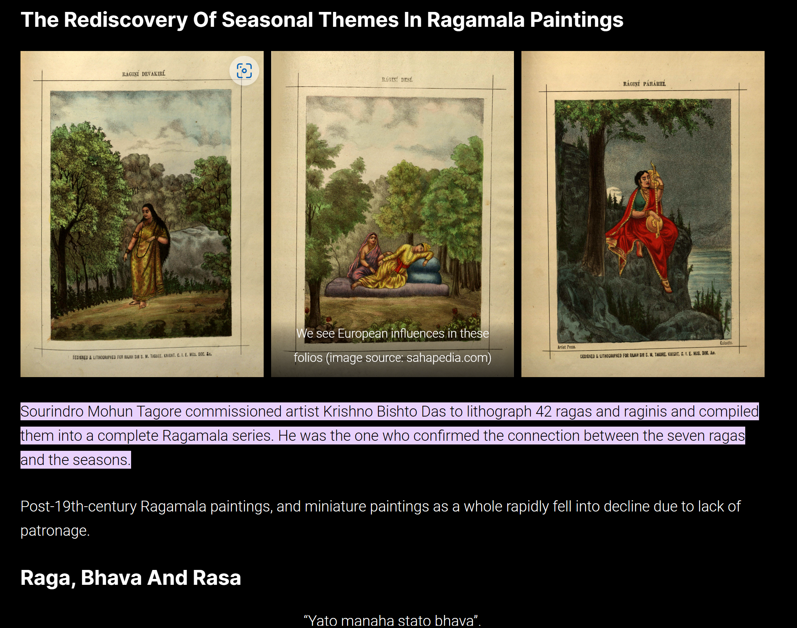

![]()


Somelighttoeaseyourvisit (read until satisfied)[edit]
Strenuous intelligence is stupid, if you see yourself doing great things you're not focusing on the Supreme.
being in sharan (slave to) the un-katha-able / Akal (God's place / tellable by no means) is the way to go.

Though this wiki was initially a tribute to Gyan ∨ Jnana ∨ Gnostic teachings of Saints (Bless that attribute, the Guru's blessings are untellale, attribute(s) ∨ blessings seen on the right in green writing, this guidance is forever helping and is forever available and a mirror of everything divine) Doing and saying Waheguru covers everything and it teaches lots, all you have to do it say it with a strong new vow type conviction that changes thought patterns. It's all you need¹ (and all you need to get started. You know plenty and have access to learn about that which your heart tells... "Yahya related to me from Malik from Zayd ibn Aslam from Ata ibn Yasar that a man of the Banu Asad said, "My family and I dismounted to rest at Baqi. My family said to me, 'Go to the Messenger of Allah, may Allah bless him and grant him peace, and ask him for something that we can eat,' and they began to mention their need. I went to the Messenger of Allah, may Allah bless him and grant him peace, and found that a man was asking for something, and the Messenger of Allah, may Allah bless him and grant him peace, was saying, 'I do not have anything to give you.' The man turned away from him in anger, saying, 'By my life! You give to whomever you wish.' The Messenger of Allah, may Allah bless him and grant him peace, said, 'He is angry with me because I do not have anything to give him. Whoever asks of you while he has an uqiya or its like, has asked with importunity.' " The man continued, "I said to myself about a camel that we had, 'It is better than an uqiya.' (Malik explained that an uqiya was forty dirhams.) So I returned and did not ask him for anything, and the Messenger of Allah, may Allah bless him and grant him peace, sent me barley and raisins after that. He gave us from his share until Allah, the Mighty, the Majestic gave us relief.") ¿Does it have to be "Waheguru" absolutely not *2 whatever helps you get to that. It could any word, quality, guidence, saint, or even letter as Sri Guru Arjan Dev Ji tells us "One letter in remembrance of nam where the tiniest amount of being (God) dwells within or the soul (not God) reaches out for a small moment, it's greatness cannot be denumerated." (Sukhmani Sahib, Ashtpadhi 1, Benefits of Nam. circa 1602)

Granted things are prized and super beautiful not mundane.
Atributetodogooddeeds (Blessings are greater). If you're happy what need is there to not think of the ilahi (divine) invisible? If your burdened by, doing good deeds you can change your destiny, or by connecting to the truth enough the mind is cleansed completely and would naturally reflect on natural direction along side having the vibrant aid then how could you be worried by pains? There are activities in life that make you happy/laugh, make you content, and make you sad.²³ Worry about happiness is one of the worse states of minds. Sometimes you need to put in that amount of displeasing work or more to achieve that thing that makes you happy, you shant desire others things,⁴ ⁵ things that don't belong to you or as Mr. Horowitz denotes not desiring empty things.⁶ Thus you shant desire empty things beyond your reach especially at a pace unnatural to what circumstances and actions you have just or already commited- Bhagat Rabai (Hossein Kamaly. 2019) used to carry a pitcher of water and a torch of fire telling people if God gives you hell let it burn more and if god gives you heaven enjoy water but dont remember God for the sake of either two things (distinguishig fire or gaining something) remember God just for Himself. So what are the activities that make you content? (Reciting Gurbani⁕ and Simran⁕ both make you happy) So what makes you content? The answer is good character. spirituality and maryada (sunnah ∨ dharma), building on gifts, (opportunities ∨ improvements), karma can pickup your soul to the house of God. The Aṅguttara Nikāya (circa 20 BCE), points out even just doing good conduct alone leads to joy, bliss, discretionem etc. (because lack of remorse of bad actions).¹⁰
-
Themajorsins;)ofamedatitatingperson The number one way to maintain energy is to mediate more (espeically using mala and watching a super high quality religious video) {If you want to call the Guru ideally at all 8 quarters of the day somehow?} Being on the rightous way the whole world will praise you (You will have no enemies) Try to find that one odd way that somehow exists and everyone would agree with. One fine {or only?} way to maintain Nama (meditation magic) is to be in love with something (eg Radha as cited in Nityanand Charan Das, Icons of Grace 2021, [Kindle] 337 pages)) If you cannot love the divine try for minimum a neutral state (heavenly baby steps for dark circumstances) eg by avoiding meeting a malisha person (5th) or chadala (6th) class (varna) person (not by birth but just low quality people). The first formost way is to talk your way through it against malish- Make the victory for angels and not demons, be sure truth (or justice) is spread. Try to not be egotistic first. Next if not you can keep your mind focused on divine things. You can also keep looking down, only looking up to glance to what you need to attend to and then looking back, avoiding talking and looking at face of said persons or have someone else assigned to talk to them. You can also holding a walking stick (3 prons of energy touching ground - via Sheikh), Wash your feet when returning to abode, to tie a cummerbund (eg Kimono)
 Once prayer time is over act like normal towards malisha and chandala- dont exclude anyone, you can laugh and be happy, just during "prayer times" (simran) or art times, etc. if you feel you need to good deeper its fine.
Yahya related to me from Malik that he had heard that A'isha, the wife of the Prophet, may Allah bless him and grant him peace, said, "A man asked permission to come in to see the Messenger of Allah, may Allah bless him and grant him peace. I was with him in the house and the Messenger of Allah, may Allah bless him and grant him peace, said, 'He is an evil member of his tribe.' Then the Messenger of Allah, may Allah bless him and grant him peace, gave him permission."
A'isha continued, "It was not long before I heard the Messenger of Allah, may Allah bless him and grant him peace, laughing with him. When the man left, I said, 'Messenger of Allah, you said what you said about him, and then before long you were laughing with him.' The Messenger of Allah, may Allah bless him and grant him peace, replied, 'Among the most evil of people is the one whom people are cautious with because of his evil.' "
.
Again being in love with life you dont need to do these things and whatever you want you get anyways, even 10X the amount if avoided for a good reason..thus why good character, good deeds are important for blessings.
More things to keep your energy fine every three hours is
- Dont go against the heart with the tounge in conversation espeically about food.
- Dont eat anything that you have doubt that it may not be good for you. (The Kural, Ca. 450 CE)
- not missing morning bath (at-pre-sunrise), etc.
Once prayer time is over act like normal towards malisha and chandala- dont exclude anyone, you can laugh and be happy, just during "prayer times" (simran) or art times, etc. if you feel you need to good deeper its fine.
Yahya related to me from Malik that he had heard that A'isha, the wife of the Prophet, may Allah bless him and grant him peace, said, "A man asked permission to come in to see the Messenger of Allah, may Allah bless him and grant him peace. I was with him in the house and the Messenger of Allah, may Allah bless him and grant him peace, said, 'He is an evil member of his tribe.' Then the Messenger of Allah, may Allah bless him and grant him peace, gave him permission."
A'isha continued, "It was not long before I heard the Messenger of Allah, may Allah bless him and grant him peace, laughing with him. When the man left, I said, 'Messenger of Allah, you said what you said about him, and then before long you were laughing with him.' The Messenger of Allah, may Allah bless him and grant him peace, replied, 'Among the most evil of people is the one whom people are cautious with because of his evil.' "
.
Again being in love with life you dont need to do these things and whatever you want you get anyways, even 10X the amount if avoided for a good reason..thus why good character, good deeds are important for blessings.
More things to keep your energy fine every three hours is
- Dont go against the heart with the tounge in conversation espeically about food.
- Dont eat anything that you have doubt that it may not be good for you. (The Kural, Ca. 450 CE)
- not missing morning bath (at-pre-sunrise), etc.
- Atributetomoods: Experience: the feeling of how beautiful life and everything is which starts the simran⁕/background autosimran/naam
this strenuously cures all illness and worries.⁵ and then step outside your aura of indepedence do charana bind.. add the guru to the mix and you will get heavenly results.
The content here is for your own contententness a supreme gift to you so your own pace be at play, stop, and experiement do it agian and once more time at the end. Most of the good stuff is found within your own _____ Tyaging (completely ignoring / paying zero importance) facebook news sources / radio: strictly listening to Gurbani and saints -> gravitating towards the heavens and not the world.
Last note on this stuff:
 Use Almond oil every 11 hours particularly shoulders and feet, another great powerful energy excersise is wiggling toes for a a second and changing their resting/still position.
Does immense wonders at super low cost and massaging time.
Use Almond oil every 11 hours particularly shoulders and feet, another great powerful energy excersise is wiggling toes for a a second and changing their resting/still position.
Does immense wonders at super low cost and massaging time.
⁕Simran: Everytime you stand up in prayer at night is a raga in itself! (Standup throughout the night) Unifying with the Supreme (lit. nam or a thing that is the most beautiful thus God there dwells in that prime place), this repitation / focus using symbols of various numbers and reflections builds wealth, power, and leads to blessed and best direction, good deeds, the way, etc. Reading gurbani listening to it (listening to kirtan) iz the defacto besz thing in the world..you can get any feeling you desire while liszening. (thus the name which ratana ∨ jewel)⁷
Raga Suhi - The only one bright • Raga Suhi - The only one Raga Suhi - The only one bright • Raga Suhi - The only one bright
Raga Nat - conflicts • Raga Nat - conflicts • Raga Nat - conflicts Raga Nat - conflicts • Raga Nat - conflicts • Raga Nat - conflicts⁕Gurbani: the guru's poetry and also sermons - used to manipulate or create this feeling of continuous meditation and blessings, inspire you to do the Supreme - read until the exact moment you get bored of it (sehaj ∨ slack) - you shouldn't have desires or hunger to read more (have something or some book in todo list, some question in your mind) - read until you get bored of it / hukam (or enlightened) / Supreme way calls. Read lots and lots tranquily and experiment a lot if you still need more teachings. Blessing able says minor if you relaxingly wash ∨ rinse your hair before reading, (if not done prior to sunrise and deep sleep, or nulled if hair not covered while going to toilet or eating to save vibration of thoughts in head)⁸ pseudo-heavely alertness: r@g@, read ∨ listen to right ਰਾਗ (accompanying theme) mainly any within compatible family ∨ thaat / element or similar vadi or samvadi or at the RIGHT SEPERATION / UNION BETWEEN LOVER:⁹ Mood likeness 
 he right time is also important consider the
three circling quarters of the sun (ie 'or tempo if mixing up different times'... sorry can get complex but just take whatever elements you can..., and a special quarter for when the sun changes at sunrise or sunset (1), morning pahar ∨ first quarter (2), mid day (3), descending quarter pahar (4). So Rag Gorakh Kalyan is Rat 1 (R1) meaning first quarter of the night and Rag Maajh is to be listened at 4 / the fourth quarter of the day. Or if you just sit reclined to read or lie down while mediating your ego would be more intensely inspired to be fwee.
he right time is also important consider the
three circling quarters of the sun (ie 'or tempo if mixing up different times'... sorry can get complex but just take whatever elements you can..., and a special quarter for when the sun changes at sunrise or sunset (1), morning pahar ∨ first quarter (2), mid day (3), descending quarter pahar (4). So Rag Gorakh Kalyan is Rat 1 (R1) meaning first quarter of the night and Rag Maajh is to be listened at 4 / the fourth quarter of the day. Or if you just sit reclined to read or lie down while mediating your ego would be more intensely inspired to be fwee.
- Shabad - Divine conversation with the Lord.
Meditating for the love of the path:
Íú±·¥Ä·¥á ô Íú±…™…¥…¢ ú ô·¥á·¥Ö…™ (What is gurmat in practice)
Raghbir Singh Bir (Abyas ∨ Simran ∨ Health)
Thiru valluvar Ji (Spirituality ∨ gyan ∨ general knowledge)
History
Sant Gurbachan Singh ji Khalsa (Maryada ∨ Khalsaness)
Bhai Randhir Singh ji (History ∨ British)
Baba Akali Phoola Singh ji (Khalsa ∨ Puratan)


Wa-he-gu--r--u[edit]
Notinthyheavensyet?
Try considering being nonpeaceful with Self as a sin- dont push for more water or fire to change the mood just let things be ok. Why make your self go against God? Wah–recognizeheavenandgetridofallworry.
Misc. 
Someblessedpaths[edit]
Spirituality links üå∫[edit]
- https://www.youtube.com/channel/UCzrS86h3askug767Hf5IoMQ (Punjabi)
- https://www.youtube.com/c/BarusahibOrgHP/videos (Punjabi)
- https://www.youtube.com/channel/UCkk08jZ-PBYB4ohQvVi-goA
- https://www.youtube.com/c/PristineMindFoundation
- https://www.youtube.com/watch?v=MgmtIdupc1s (Punjabi)
- https://www.youtube.com/watch?v=Qx40srovaRg (Punjabi)
- https://www.youtube.com/watch?v=wmRnLlimImI (Punjabi)
- https://www.youtube.com/watch?v=Hg0c32KbA-g&t=1044s
- maybe https://www.youtube.com/watch?v=fD1VCxB3C18&t=203s (unexplored)
- maybe https://www.youtube.com/watch?v=qqgbU8YJ6dk (unexplored)
Rebabre - We develop complete fast and relaible information services, process improvements, and smart automations. Web design is inclusive of strategy and resources.


{kind=link}